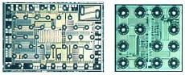

Wafer-Level
Packaging
Wafer-Level Packaging (WLP)
refers to
the technology of packaging an integrated circuit at wafer level,
instead of the traditional process of assembling the package of each
individual unit after wafer dicing. WLP is essentially a true
chip-scale packaging (CSP) technology, since the
resulting package is practically of the same size as the die.
Furthermore, wafer-level packaging paves the way for true integration of
wafer fab, packaging, test, and burn-in at wafer level, for the
ultimate streamlining of the manufacturing process undergone by a device
from silicon start to customer shipment.
Wafer-level
packaging basically consists of extending the wafer fab processes to
include device interconnection and device protection processes.
However, there is no single industry-standard method of doing this
at present. In fact, according to an article in
www.future-fab.com, there are
at least four major WLP technology classifications in
existence today, based on a study by Prismark and TechSearch
International.
The four
(4) WLP technology classifications according to Prismark and TechSearch
International* are the:
1)
Redistribution Layer and Bump
technology,
which is used by: Amkor
(Ultra CSP™), Apack, Aptos, ASE (Ultra CSP™), ASAT Chipbond, Dallas Semi
(2 lead), FCT (Ultra CSP™), Fraunhofer Institute, FuPo, Hitachi,
Hyundai, National Semi (µSMD™), PacTech, Sandia Labs, Seiko Epson, SPIL
(Ultra CSP™), Unitive (ExtremeCSP™) ;
2)
Encapsulated
Copper Post
technology,
which is used by: Casio, Fujitsu (SuperCSP™), IEP, Oki Electric,
TI, Shinko (SuperCSP™ license), Toshiba;
3)
Encapsulated Wire
Bond
technology,
which is used by:
Form Factor (Wow™, MOST™), Shinko,
Hyundai, Infineon (Wow‰ licensees); and
4)
Encapsulated Beam Lead
technology,
which is used by:
ChipScale (Intarsia, M-Pulse Microwave), ShellCase (ShellBGA™), Tessera
(WAVE™).
*source:
www.future-fab.com
Redistribution Layer and Bump
technology, the most widely-used WLP technology,
extends the conventional wafer fab process with an additional step that
deposits a multi-layer thin-film metal rerouting and interconnection system to each
device on the wafer. This is achieved using the same standard photolithography and thin
film deposition techniques employed in the device fabrication itself.
This additional level of
interconnection redistributes the peripheral bonding pads of each chip
to an area array of underbump metal (UBM) pads that are evenly deployed over the chip's
surface. The solder balls or bumps used in connecting the device
to the application circuit board are subsequently placed over these UBM pads.
Aside from
providing the WLP's means of external connection, this redistribution
technique also improves chip reliability by allowing the use of larger
and more robust balls for interconnection and better thermal management
of the device's I/O system.

Figure 1.
Photos of two wafer-level packaged devices from
Dallas/Maxim;
source:www.maxim-ic.com
Different
companies using redistribution technology implement it using different
materials and processes. Nonetheless, the sequence of steps
required are more or less similar. The first layer put over the wafer to
'package' the device is usually a benzocyclobutane (BCB)-based polymer
dielectric, to isolate the device circuitry from the rewiring system.
The rewiring
metallization layer, usually Cu, Al, or a specially-developed alloy, is
then deposited over this dielectric. This layer is then covered by
another BCB dielectric layer serving as the solder mask. Underbump
metallization is then put over the positions to be subsequently occupied
by the solder balls. After the balls have been attached, flip-chip
techniques are used to mount the WLP device onto the circuit board.
Encapsulated
Copper Post
technology is very similar to redistribution and bump technology in the
sense that the chip's bond pads are also rerouted into an area array of
interconnection points. In this technology, however, these
interconnection points are in the form of electroplated copper posts,
instead of pads.
These copper
posts provide enough stand-off for the active wafer surface to be
encapsulated in low-stress epoxy by transfer molding, exposing only the
top portions of the posts where the solder balls will be attached.
This WLP technology is supported mainly by Japanese companies.
Encapsulated
Wire Bond
technology
mainly pertains to the Wire-on-Wafer (WOW) technology developed by Form
Factor. Again, this technology employs a redistribution layer to
reroute the device peripheral I/O's (bond pads) to meet the desired
pitch. Using a modified gold ball bonder, gold ball-bumped
micro-spring bond wires are formed on the redistributed pads.
The
technology for the micro-spring structures employed by this system
originated from Form Factor's earlier efforts to come up with highly
compliant contactors for fine-pitched probe cards. The micro-spring bond
wires are then overcoated with electroless Ni/Au to make them more
robust without sacrificing compliancy.
Encapsulated
Beam
technology includes a very diverse class of WLP techniques from wafer
lamination to glass technology. Examples of this technology are
Shellcase's ShellBGA™
and ShellOp™,
and Tessera's WAVE™.
Shellcase's patented ShellBGA™
is a true chip-size BGA
type of wafer-level package wherein the silicon chip or die is
sandwiched between two glass layers, resulting in a thin
glass-silicon-glass structure. The glass sheet covering the active
surface of the wafer has openings for the solder balls. The glass
sheet covering the die backside completes the total enclosure of the
die. Note that the die is completely encapsulated in epoxy prior to its
being laminated between the two glass sheets.
Shellcase's
ShellOP™,
is similar to ShellBGA™,
except that the solder balls are located on the die backside. This
allows a clear view of the die's active circuit through the clear glass
sheet protecting the top surface. This type of package was
designed for image sensing and light detection applications, which is
why it was designed to provide the die circuit with unobstructed
exposure to external light. The die's bond pads are routed to the
backside glass sheet which has openings to accommodate the solder balls.
Tessera's WAVE™
package ('WAVE' stands for "Wide Area Vertical Expansion") is a WLP
technology targeting high I/O applications that require short assembly
cycle time. The interconnection routing used by this architecture
comes in the form of a compliant polyimide film-based copper circuit.
This
polyimide film circuit is accurately aligned and brought into contact
with the wafer, after which a low-modulus encapsulant is forced into the
small space between the polyimide film and the wafer. This process
causes both the polyimide film and wafer to expand, resulting in the
polyimide bases' copper conductors to transform into its intended shape,
i.e., as a stress-absorbing structure that links the die to the
interposer. The wafer-level packaging is then completed with
encapsulation and solder ball attachment steps.
The main
drivers of WLP technology in the semiconductor industry today are cost, size,
test, and burn-in. The
advantages
offered by wafer-level packaging include:
1) space savings from
attainment of the smallest package possible for a device, i.e., a true
chip-size package;
2) lowest cost per I/O since
the traditional package assembly processes that are independent of wafer
fab have been replaced by wafer-level interconnection processes;
3) lowest cost of electrical
testing since this is done more efficiently at wafer level;
4) lowest cost of burn-in
since this is done more efficiently at wafer level;
5) enhancement of device
performance because of its minimum-length interconnections;
6) elimination of the need
for underfilling of solder joints with organic materials; and
7) easier
inventory management since fab, assembly, test, and burn-in can
essentially be housed under one production floor.
As of this writing (2004), wafer-level packaging technology still has lots of room for
improvement. Its range of applications is not yet too encompassing, being currently applied primarily to small
packages with low I/O count, such as those used in analog/linear IC's,
certain types of memories, integrated passive devices, and certain types
of controllers.
Also, given the
multitude of technologies available as WLP solutions today, we might not
see a single industry-standard 'best-known' WLP process in the near
future. Most
experts likewise agree that WLP will not be the exclusive solution of
choice for the packaging requirements of the future.
Still,
there's reason to believe that WLP technology will advance and become
more cost-effective to eventually find its way into more complex, higher
I/O applications in the electronics industry.
See Also:
Wafer-Level Test/Burn-in;
IC
Manufacturing; CSP;
BGA;
Flip Chips
HOME
Copyright
© 2001-Present
www.EESemi.com.
All Rights Reserved.